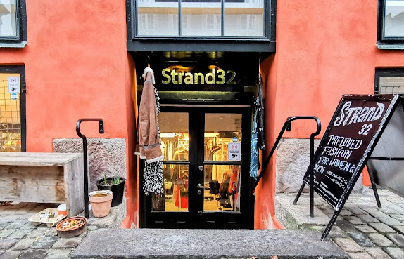
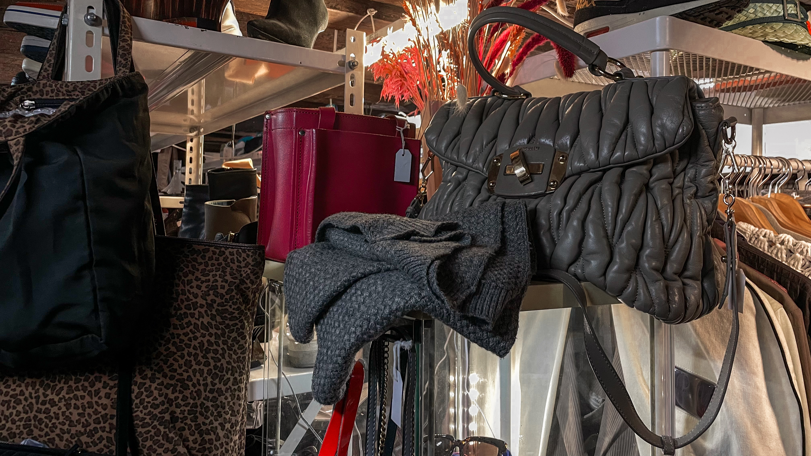
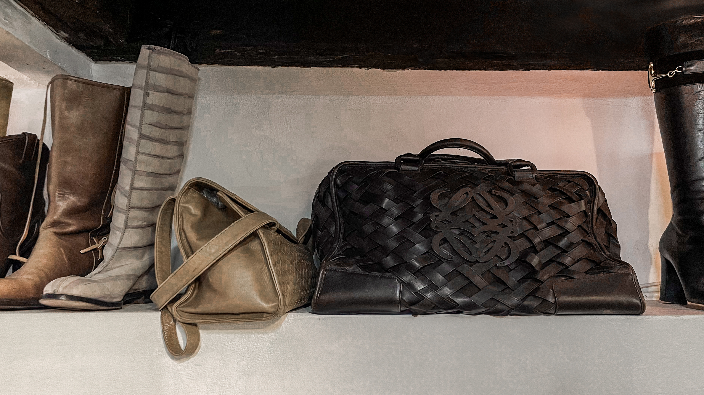
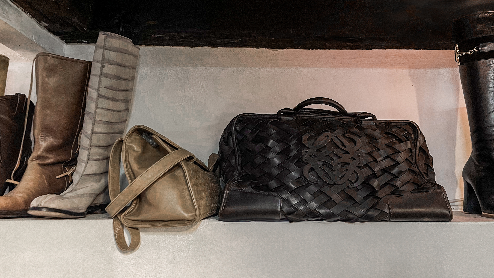

OM STRAND32
Strand 32 er ikke bare en butik – det er en passion, der har taget overhånd.
Vi er Rune og Jeanette. Et ægtepar, der har samlet designertøj i over 20 år, indtil vores lejlighed, loftrum og kælderrum bugnede. På et tidspunkt måtte vi tage en beslutning: Skulle vi skille os af med noget af det – eller skulle vi tage skridtet videre og åbne en butik? Vi valgte det sidste.
Strand 32 er vores skatkammer, vores lille fristed, hvor vi samler de ting, vi selv elsker. Vi jagter det sjældne, det ikoniske, det håndværksmæssigt overlegne – og vi gør det på vores egen måde. Vores tøj er håndplukket fra hele verden gennem auktioner, rejser og forbindelser, vi har skabt gennem årene. Her finder du Prada, Louis Vuitton, Dior og mange flere – men du finder dem kun én af gangen. Hvert stykke tøj har sin egen historie, og vi elsker at dele den med dem, der kigger forbi.
Men Strand 32 er ikke for alle – og det skal det heller ikke være. Vi jagter ikke trends eller hurtige salg. Vi køber det, vi selv synes er fedt, og vi sælger kun det, vi kan stå inde for. Vi driver forretningen på ærlighed og kærlighed til godt design. Og vi elsker, når folk kommer forbi for at nørde med os, grave sig gennem tøjet og opdage noget, de ikke vidste, de manglede.
Selvom du kan gå på opdagelse her på webshoppen må du også meget gerne komme ned i butikken, mærke stoffet, prøve tøjet og tage dig tid. For det er sådan, vi mener, godt tøj også skal opleves. Velkommen til vores verden. Vi glæder os til at møde dig.
Rune & Jeanette
 
